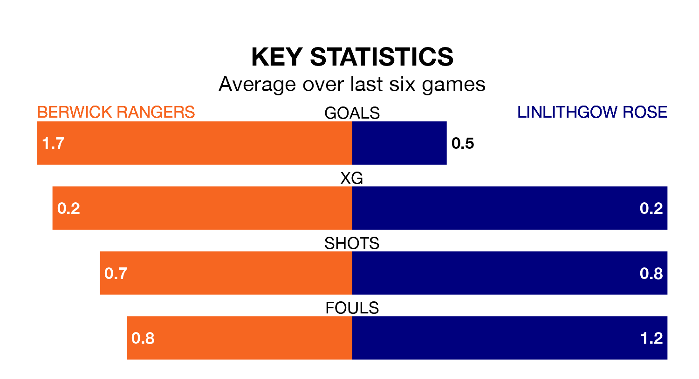

Linlithgow Rose come to Shielfield Park to play Berwick Rangers on Saturday in terrible form, having collected just one point from their last six games.
The visitors have drawn just one of their last six fixtures, while Berwick have three wins and three losses.
With 39 goals in 31 games so far this season, Berwick are scoring at below the league average rate with 1.3 goals per game. But they are conceding fewer than average too, letting in 39 goals at a rate of 1.3 per game.
Linlithgow Rose, meanwhile, are above average scorers, with 1.7 goals per game, compared to a league average of 1.6. They have conceded 1.2 goals per game.
Rangers are 12th in the table after 31 games, of which they have won 12 and drawn five, earning 41 points.
The away side are four places ahead of the hosts in eighth, with 12 wins and nine draws putting them on 45 points.
Over the last two years, Berwick and Linlithgow Rose have played each other twice. Linlithgow Rose won one of them and they drew the other.
Their last meeting was on September 30, when they played out a 1-1 draw.
Berwick's last match was on March 23, a 2-0 loss against Edusport Academy.
Linlithgow Rose lost 1-0 against Cowdenbeath last time out, on Saturday.
Updated: 10:31 (UTC), 31/03/24